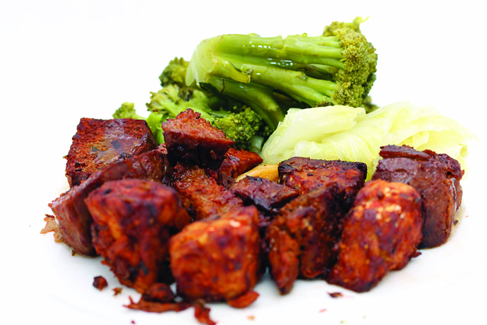

Nutrición
Y la carne… ¿con qué se puede suplir?

Veganos y vegetarianos ya lo vienen haciendo, pero hay quienes quieren empezar en este camino o simplemente disminuir su consumo. Para los socialmente carnívoros es una tarea difícil, por eso acá les damos algunos datos para sobrellevar esa abstinencia con ganas de estar mejor y un resultado óptimo.
Para los nutricionistas el primer paso es de salud, saber cómo remplazar la carne en sus componentes como vitaminas, hierro, etc. Para los consumidores lo esencial es el sabor o la textura en comidas que solían contenerla. Por eso, acá van algunos alimentos que servirán para comprobar que se puede comer sin carne tanto en lo referente a la salud como a los gustos:
Seitán: Es la carne vegetal por excelencia. Tiene un alto contenido en proteínas y su sabor, textura y consistencia son similares a los de la carne.
• ¿Qué es? Gluten de trigo, es fácil de preparar o puede comprarse en dietéticas.
• ¿Cómo se prepara? rebozado, frito, en guisos, etc… Casi todas las versiones de la carne pueden ser suplidas.
Dato: Por día se recomienda consumir entre un 10% a un 35% de proteínas. O, para ser más claros, hay que consumir alrededor de 8 gramos de proteínas por cada 20kg de peso.
Soja texturizada: Es el concentrado de las proteínas de la soja. Por eso este preparado tiene proteínas completas como la carne… y no contiene grasas!
¿Qué es? Es un tipo de soja que se somete a una serie de procesos como alta temperatura, presión, texturización y deshidratación.
¿Cómo se prepara? En lasañas, albóndigas, hamburguesas, salchichas…
¿Qué son las proteínas? Están formadas por aminoácidos, 22 de los cuales son indispensables para la vida y 8 de ellos sólo pueden adquirirse mediante la alimentación. Las carnes los poseen, por eso es uno de los caballitos de batalla de quienes reniegan del vegetarianismo… pero lo cierto es que pueden conseguirse mediante el consumo de otros alimentos.
Legumbres y porotos: En sus distintas variedades pueden suplir algunas comidas carnívoras gracias a su textura.
• ¿Cuáles? Pueden ser porotos aduki, arvejas, lentejas, garbanzos…
• ¿Cómo se preparan? Luego de cocidas se hace una pasta con la que podemos hacer, por ejemplo, hamburguesas…
Para agendar: Las leguminosas aportan proteínas muy parecidas a las de origen animal, aunque deben acompañarse con cereales para que resulten completas.
Tofu: Su sabor y textura es más suave y cremosa que la carne. Combina bien con casi todos los alimentos y permite gran variedad de platos “convertidos”.
¿Qué es? Es un derivado de la soja.
¿Cómo se prepara? Puede freírse, cocinarse al horno, a la parrilla… además se pueden hacer albóndigas o rallarse en ensaladas.
Salud: En una dieta vegetariana el secreto está en la combinación de los alimentos: lo que falta en uno se complementa en el otro. Esto debe atenderse en cada comida, pues la ingesta debe ser de todos los aminoácidos juntos. Por eso, combinar y complementar las proteínas es la clave.
Quinoa: Puede suplantar a la carne ya que contiene todos los aminoácidos esenciales.
¿Qué es? Un grano rico en proteínas con gran aporte de fibra entre otros nutrientes.
¿Cómo se prepara? Por su textura se pueden preparar varios platos. Son ideales para suplir hamburguesas, albóndigas y demás.
También… las berenjenas, los champignones y las chauchas tienen una textura que puede ser similar a la de la carne… y en milanesas son deliciosos!!!!